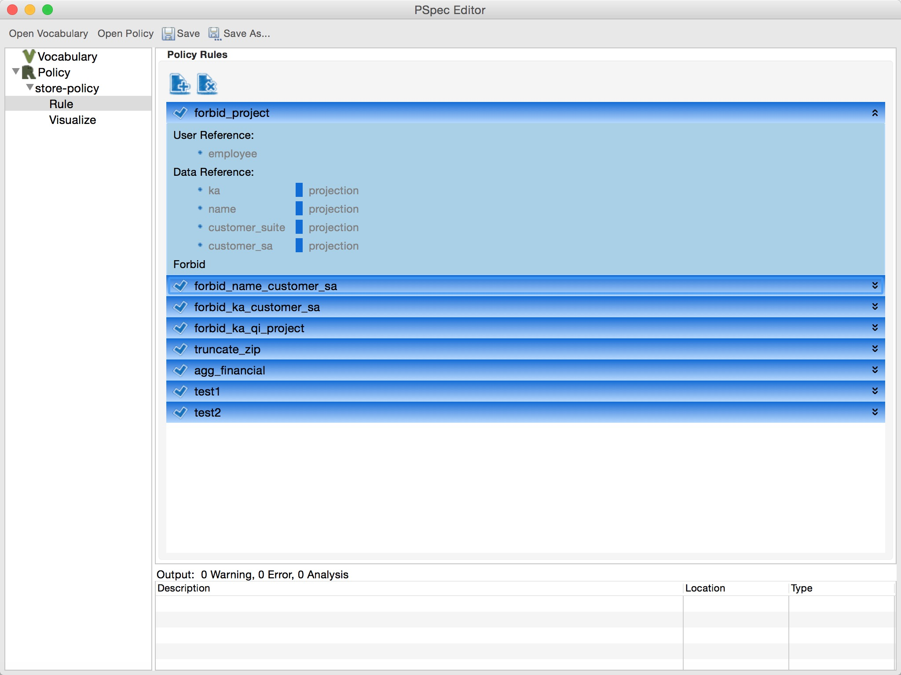
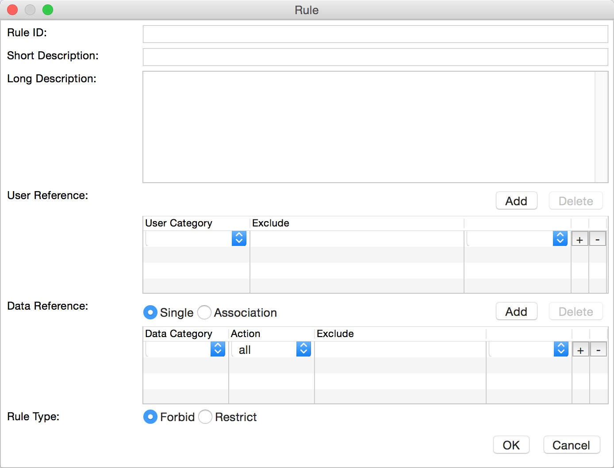
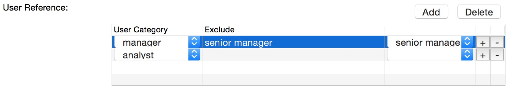
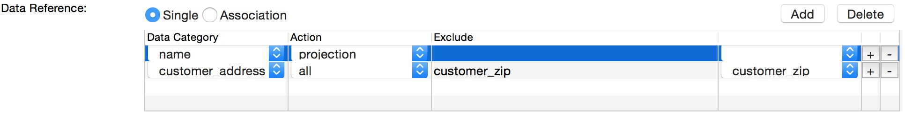
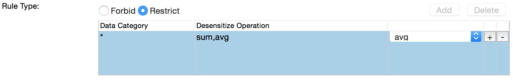
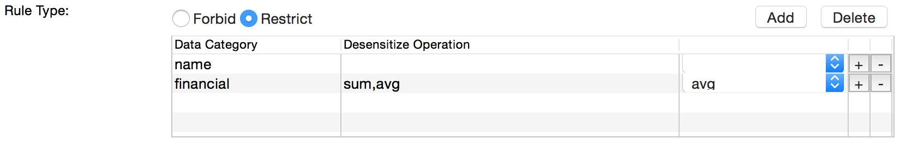

To manage rules in a pspec policy, one should click "Rule" under the id of the policy in the navigational tree. An example of rule view is shown as follows.

The rule view shows all rules in a policy, and a rule can be expanded or shrinked by simply clicking the bar of it. When a rule is expanded, the brief summary, including the targeted user/data categories and restrictions, is shown. In the following, we discuss how to manage the rules, i.e., adding, editing and deleting rules.
To add a rule, one can simply click the button "+" at the top of the rule view. And a dialog is then shown as follows.

The policy writer should then fill the fields in the dialog to create a new rule. First, the policy writer should set of basic information of a rule, including ID (uinque among the policy), and Short/Long Description.
We then discuss how to set the user references, data references and restrictions respectively as follows.
The user reference of a rule indicates what user categories the rule applies to. If a user category is referred by a rule, then the rule is implicitly applicable to all the descedant user categories as well. To refine the applicable user category, one can explictly exclude certain descedant user categories. The policy writer also can refer multiple user categories in a rule, which means the rule is applicable to all these user categories. An example user reference is shown as follows.

The example user reference states the rule is applicable to manager (but not senior manager) and analyst. And to add or delete a user category, one can simply click the "Add" or "Delete" button above the user reference table respectively.
The data reference of a rule indicates what data categories the rule applies to. However, compared with user reference, data reference is slightly complicated.
First, for each referred data category, the policy writer should also specify how the data category is accessed with "Action" column. A data category can be directly projected ("projection"), or used in the control flow ("condition"), or the both ("all"). Similar to user reference, the rule is also applicable to the descedant data categories of a referred data category, and the policy writer can explicitly exclude certain descedant data categories to refine the scope.
Second, data reference can be either "Single" or "Association". A single data reference means the rule is applicable to any referred data category accessed by a query. However, an associated data reference means the rule is triggered only when a query accesses all data categories together specified in the data reference. And the data categories referred in an associated data reference must be disjoint, that is, no data category is the parent of another. Thus, a single data reference with multiple data categories is equivalent to multiple associated data references, each of which only refers one data category. The policy writer must distinguish between the two to write the right rules.

For example, the data reference above states the rule is triggered when name is projected or customer_address (exclude customer_zip) is accessed since the data reference is single. However, if the data reference is associated, the rule is triggered only when both name is projected and customer_address (exclude customer_zip) is accessed in a single query.
When a rule is triggered (some user category accesses some data categories), it can perform two actions. The rule can directly forbid the query ("Forbid" type), or require the query to desensitize the accessed data categories ("Restrict" type).
Note that the restrictions are slightly different between single data reference and associated data reference. For single data reference, the rule only contains exactly one restriction, which specifies all the data categories should be desensitized with one of the specified operations. And the operations should be supported by all the data categories in the data reference. An example is shown as follows, which requires all the data categories should be performed with avg or sum operations.

While for associated data reference, the rule can only multiple restrictions, and each restriction specifies how each referred data category should be desensitized separately with one of the specified restrictions. A query should satisfy one of these restrictions, but to satisfy a restriction, all the data categories should be desensitized accordingly. Note that if no desensitize operation is specified for a data category, then the data category does not needs to be desensitized.

For example, the above restriction requires financial should be desensitized with sum or avg operation, but name is not required.
To edit a rule, one can simply double click the expanded rule in the rule view and a rule dialog shows up. The policy writer can then simply edit the fields in the rule dialog and click "OK" button to edit the rule.
To delete a rule, one should first select the rule to be deleted in the rule view, then click the "X" button in the top of the rule view.